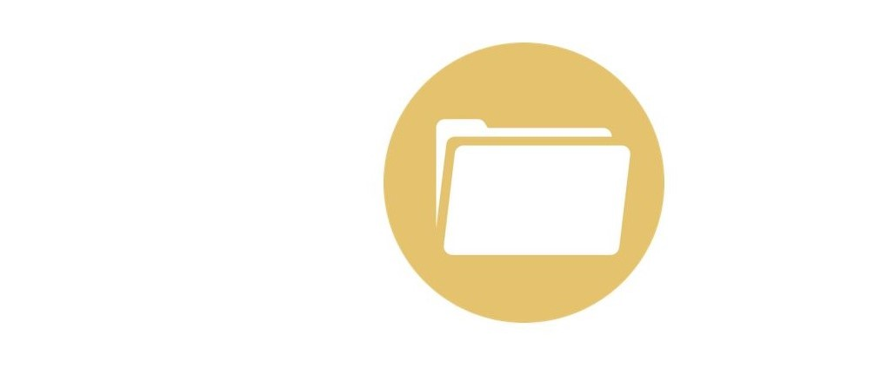
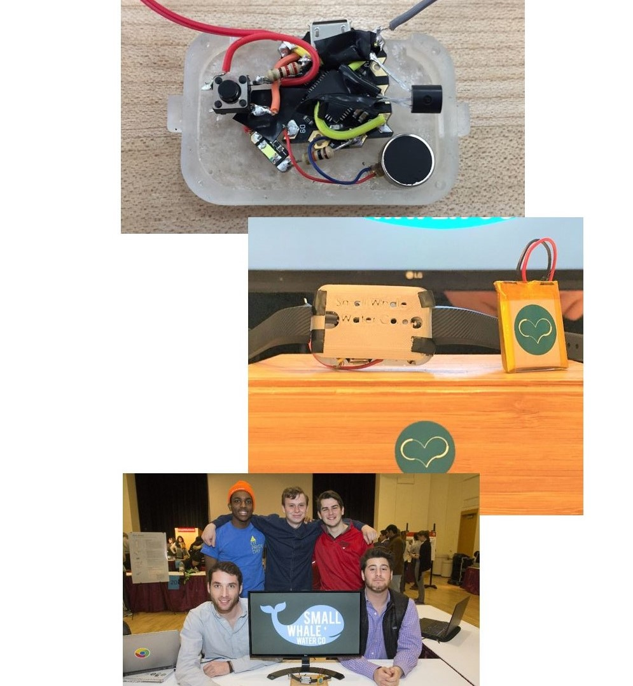
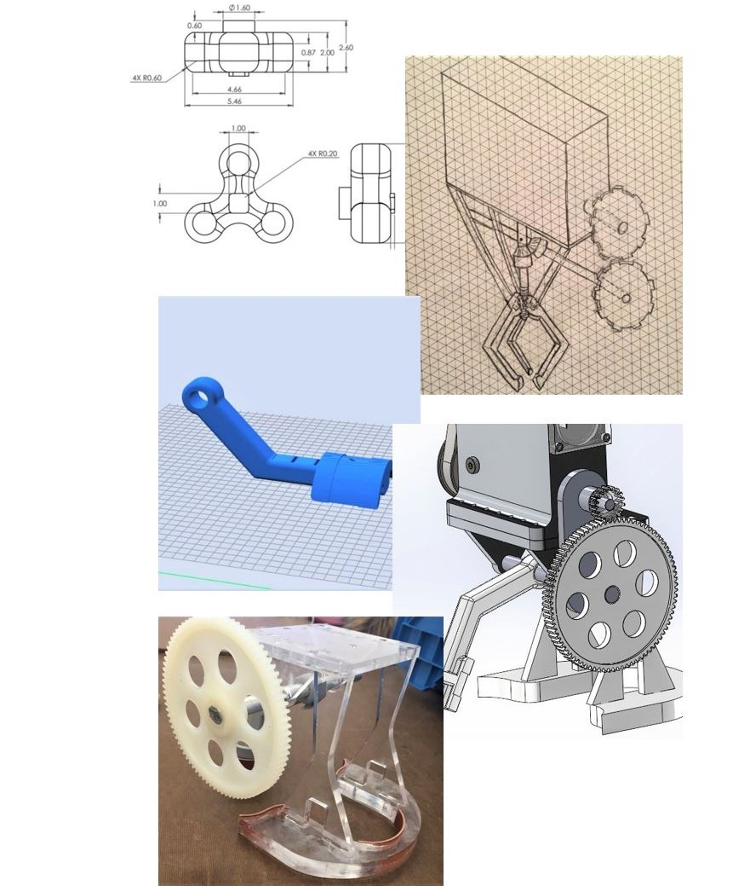
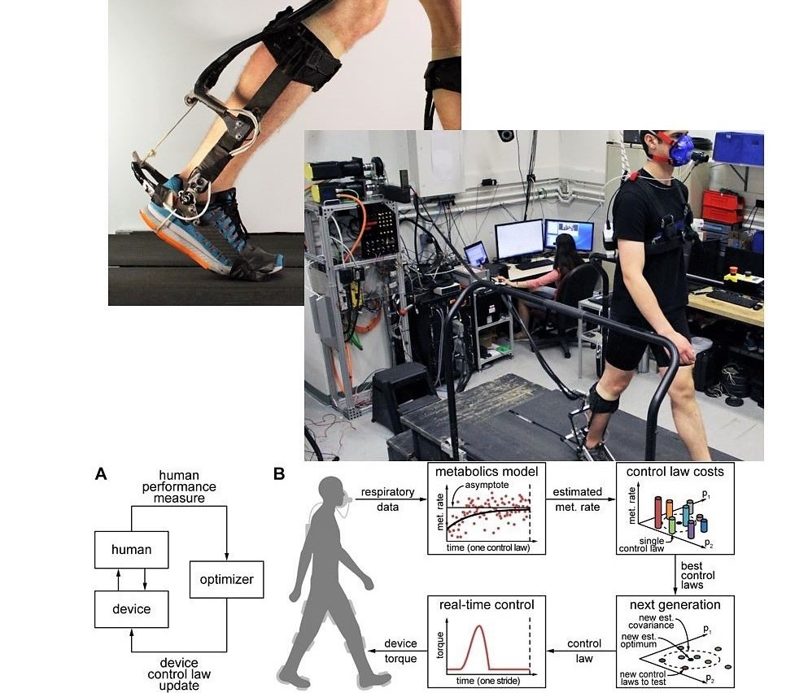
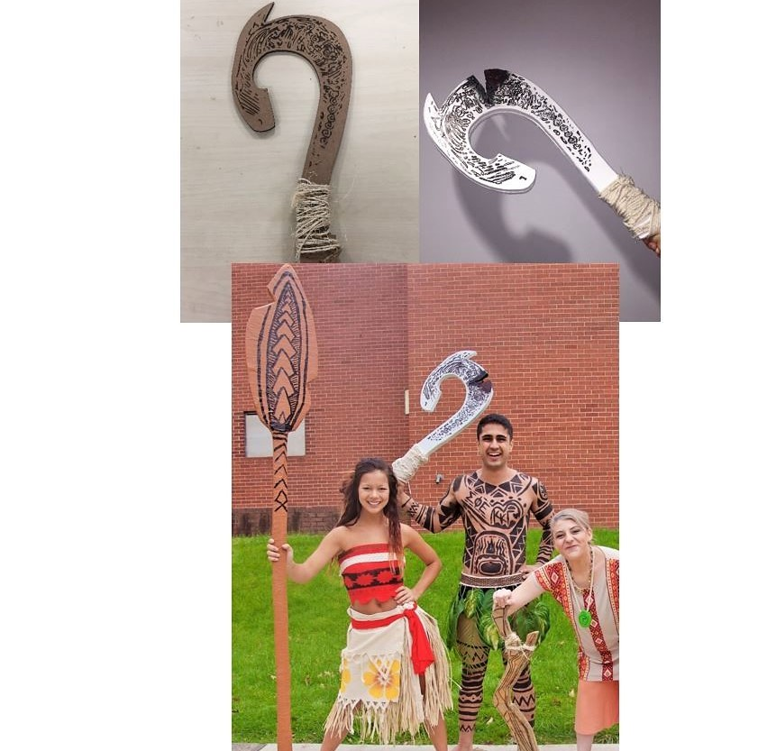

Archives
A collection of projects exploring wearables, mechanism design, exoskeleton research, and prop design, completed through college.
A collection of projects exploring wearables, mechanism design, exoskeleton research, and prop design, completed through college.
- Date
- May 2016 - May 2018

Hydration Monitoring Wearable for First Responders
I and a team of four others participated in Carnegie Mellon's Impact-a-thon; an annual hack-a-thon for social good. In light of recent natural disasters, the competition focused on using technology to aid global relief efforts. Teams were given one week and $200 to prepare their product or service and pitch.
In generating concepts for projects, I came across an anecdote from a doctor at the University of Florida who, in his relief efforts in Haiti, was so occupied that he forgot to drink water and woke up with an IV due to severe dehydration. With further brainstorming, we converged on designing a low cost, low profile wearable which could remind relief workers to drink water in high intensity situations.
I took ownership of the mechanical design of the wearable, ensuring that the internal electronic components were properly isolated while preserving the intent of a sleek body. I created extrusions to integrate with Fitbit wristband accessories and 3D printed the enclosure from resin and ABS. I also owned the user feedback design; by conducting studies with low fidelity prototypes, I converged on a pulsing vibration as the notification method.
I and a team of four others participated in Carnegie Mellon's Impact-a-thon; an annual hack-a-thon for social good. In light of recent natural disasters, the competition focused on using technology to aid global relief efforts. Teams were given one week and $200 to prepare their product or service and pitch.
In generating concepts for projects, I came across an anecdote from a doctor at the University of Florida who, in his relief efforts in Haiti, was so occupied that he forgot to drink water and woke up with an IV due to severe dehydration. With further brainstorming, we converged on designing a low cost, low profile wearable which could remind relief workers to drink water in high intensity situations.
I took ownership of the mechanical design of the wearable, ensuring that the internal electronic components were properly isolated while preserving the intent of a sleek body. I created extrusions to integrate with Fitbit wristband accessories and 3D printed the enclosure from resin and ABS. I also owned the user feedback design; by conducting studies with low fidelity prototypes, I converged on a pulsing vibration as the notification method.

Robotic Gripping Mechanism Design
My third-year design course culminated in a challenge to create the lightest robotic end effector to lift and stabilize a large metal "fidget spinner" through dynamic swinging using only power transmitted from a motor. Our mechanism had to un-grip and re-grip upon motor reversal, and only contact the spinner on the top and side faces.
When brainstorming, we compared worm gears, cables, and direct shaft mounting as power transmission modes, and eventually converged on direct mounting for simplicity and minimization of losses. While our original sketches used a claw for gripping, I drove us towards using only one swinging arm to further simplify the design and ensure stability.
Manufacturing considerations such as process speed, cost, and material allowance led us to laser cut acrylic for our structural members and to 3D print our dynamic arm, keeping us under budget through prototyping. To optimize mass, we studied individual components with FEA and simulated loading on the assembly which helped us shed mass from overbuilt parts without compromising structural integrity.
Our gripper performed amongst the top in teams in the course!
My third-year design course culminated in a challenge to create the lightest robotic end effector to lift and stabilize a large metal "fidget spinner" through dynamic swinging using only power transmitted from a motor. Our mechanism had to un-grip and re-grip upon motor reversal, and only contact the spinner on the top and side faces.
When brainstorming, we compared worm gears, cables, and direct shaft mounting as power transmission modes, and eventually converged on direct mounting for simplicity and minimization of losses. While our original sketches used a claw for gripping, I drove us towards using only one swinging arm to further simplify the design and ensure stability.
Manufacturing considerations such as process speed, cost, and material allowance led us to laser cut acrylic for our structural members and to 3D print our dynamic arm, keeping us under budget through prototyping. To optimize mass, we studied individual components with FEA and simulated loading on the assembly which helped us shed mass from overbuilt parts without compromising structural integrity.
Our gripper performed amongst the top in teams in the course!

Exoskeleton Assistance Optomization Research
The Experimental Biomechatronics Lab at Carnegie Mellon charters research projects on human augmentation. After my first year, I joined a team utilizing torque assistance applied via exoskeleton to increase energy efficiency and performance during locomotion.
I supported the principal investigators by identifying areas where the exoskeletons and other wearable devices could be made more comfortable. In early-stage testing, there was interference between the left and right exoskeletons during gait; to reconcile this, I designed spacers to add more customization and eliminate collisions. I found creative ways to arrange measuring devices and eliminate pain points for subjects. I also authored testing protocols and qualitative feedback questionnaires for the experiments.
The project was published in the AAAS Robotics journal, found here!
The Experimental Biomechatronics Lab at Carnegie Mellon charters research projects on human augmentation. After my first year, I joined a team utilizing torque assistance applied via exoskeleton to increase energy efficiency and performance during locomotion.
I supported the principal investigators by identifying areas where the exoskeletons and other wearable devices could be made more comfortable. In early-stage testing, there was interference between the left and right exoskeletons during gait; to reconcile this, I designed spacers to add more customization and eliminate collisions. I found creative ways to arrange measuring devices and eliminate pain points for subjects. I also authored testing protocols and qualitative feedback questionnaires for the experiments.
The project was published in the AAAS Robotics journal, found here!

Moana Prop Design
Annually, Carnegie Mellon's Greek organizations partner to perform short musicals which are aggregated into a competition called "Greek Sing." The event's proceeds and the chapters’ fundraising efforts benefit a charity in the Pittsburgh community! For my organization's show, I designed and fabricated replicas of key props from Disney's "Moana."
I conducted form studies with the performers using cardboard and foam prototypes, helping me align my designs with the necessary on-stage functions while retaining the movie aesthetic. The CAD modelling was done in Rhino, and I employed a variety of DIY manufacturing processes to provide the most usable props. The hook was made from band-sawed plywood, engraved via laser processing, and subsequently painted and stained. Due to its size, the oar was made from an assembly of laser cut carboard pieces and piping, wrapped in painter’s tape, and decorated.
In addition to my design work I led our chapter's philanthropy efforts, proudly fundraising over 25k in two years!
Annually, Carnegie Mellon's Greek organizations partner to perform short musicals which are aggregated into a competition called "Greek Sing." The event's proceeds and the chapters’ fundraising efforts benefit a charity in the Pittsburgh community! For my organization's show, I designed and fabricated replicas of key props from Disney's "Moana."
I conducted form studies with the performers using cardboard and foam prototypes, helping me align my designs with the necessary on-stage functions while retaining the movie aesthetic. The CAD modelling was done in Rhino, and I employed a variety of DIY manufacturing processes to provide the most usable props. The hook was made from band-sawed plywood, engraved via laser processing, and subsequently painted and stained. Due to its size, the oar was made from an assembly of laser cut carboard pieces and piping, wrapped in painter’s tape, and decorated.
In addition to my design work I led our chapter's philanthropy efforts, proudly fundraising over 25k in two years!
